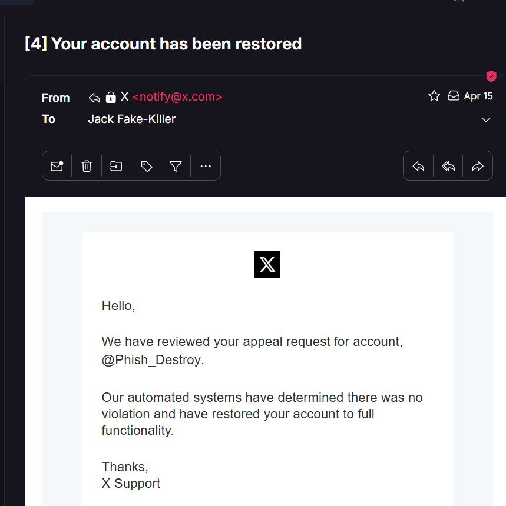
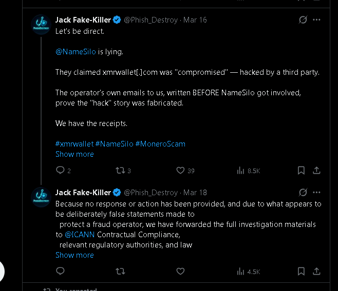
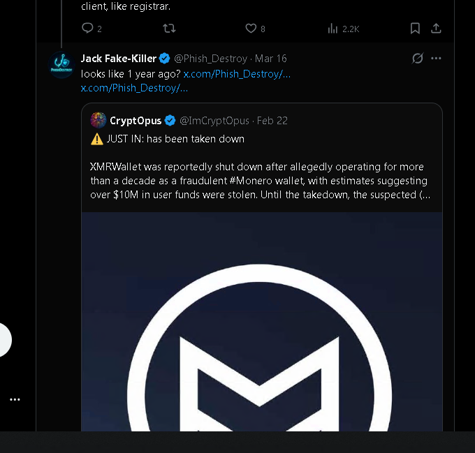
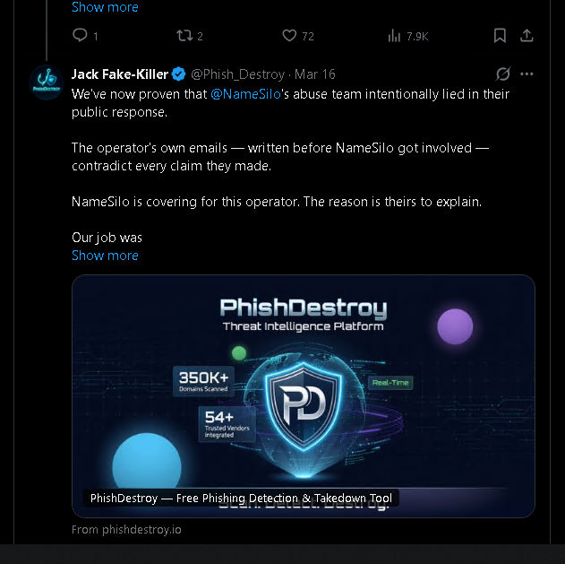

1 · The connection — they put it on the public record themselves
A scammer running a ten-year crypto drainer, on $550-a-month bulletproof hosting in Belize, behind Russian DDoS-Guard, wrote to abuse@phishdestroy.io on February 17, 2026:
"Feel free to subpoena the domain registrar for my information."
— operator ofxmrwallet[.]com, in writing, three weeks before NameSilo published their defense
Twenty-four days later, on March 13, 2026, that same registrar — NameSilo — published an official tweet calling him "the victim" of an alleged compromise, denying 20+ abuse reports ever arrived, and committing publicly to helping him scrub his VirusTotal detections.
Three other registrars holding the same domain (PublicDomainRegistry, WebNic, NICENIC) looked at identical evidence and suspended in days. NameSilo wrote a press release for him. The connection is not inferred. It is stated, by both sides, in writing.

ad29e1d3d4803ff37c88ef860bef6de9e62f6ce533657f2e5c5460eb2e0b8ebf| Registrar | Action | Time to action |
|---|---|---|
| PublicDomainRegistry (PDR) | Suspended | Days |
| WebNic | Suspended | Days |
| NICENIC | Suspended | Days |
| NameSilo | Public defense + offer to scrub VirusTotal | Never |
The variable is not the evidence. The variable is the registrar.
Read the full connection chain on GitHub →
2 · The lies — every sentence of the March 13 statement, taken apart
NameSilo's official statement was four sentences. Four falsehoods. Not "differently interpreted." Not "out of date." Not "a misunderstanding." False.
Claim 1 — "Domain was compromised a few months ago."
The theft code is the website. Eight PHP endpoints, server-side session_key exfiltration, base64 transmission of the operator's private view key to operator infrastructure. It has been the website from day one, for ~10 years. NameSilo provided no forensic indicator of any compromise — because there was none.
→ FALSE.
Claim 2 — "Prior to that, we had received no abuse reports."
PhishDestroy alone submitted 20+ delivery-receipted abuse reports through NameSilo's own portal between 2023 and 2026. The receipts have been forwarded to ICANN Contractual Compliance. Either NameSilo's intake system is broken, or the public statement was knowingly false. Both are disqualifying.
→ FALSE.
Claim 3 — "After an extensive review… not involving the registrant."
The operator wrote to us first, on Feb 16, 2026, defending the site as his own work. He never claimed a hack. NameSilo's "review" therefore adopted a framing the operator himself never advanced — meaning either the review didn't ask him, or it adopted a third-party narrative NameSilo hasn't named.
→ FALSE.
Claim 4 — "Working with the registrant to remove the website from VT reports."
This is the most damning sentence in the tweet, and the one NameSilo did not technically lie about — they actually wrote it, and they meant it. A registrar publicly committing to dispute the threat-intelligence findings of every authoritative vendor on a confirmed drainer is not abuse handling. It is active obstruction of consumer-protection telemetry on behalf of a confirmed thief.
→ STATED. AS WRITTEN. DAMNING.
Read the full line-by-line breakdown on GitHub →
3 · The pressure campaign — they're still doing this, right now
The moment we replied to the public statement with the operator's own emails, the silencing started. It hasn't stopped.
| Date | What | Status |
|---|---|---|
| 2026-03-13 | NameSilo publishes the four-claim defense | Live, archived |
| 2026-03-16 | @Phish_Destroy posts the receipts and tags NameSilo | Tweets now invisible (account locked) |
| 2026-03-18 | Case forwarded to ICANN Contractual Compliance + law enforcement | On record |
| 2026-03-?? | @Phish_Destroy permanently locked on X via Gold Checkmark live-support channel | Still locked |
| 2026-04-15 | X automation reviews the appeal: "no violation, restored to full functionality" | Lock not lifted; subscription still billed |
| Ongoing | Bing search delisting attempts targeting phishdestroy.io | Tracked; evidence file in preparation |
| Ongoing | DDoS targeting phishdestroy.io, source-IPs correlate with NameSilo's "njan la" reseller infrastructure | Mitigated; analysis publishing on phishdestroy.io |
Email #1 from X Support — the lock
"Our support team has determined that a violation against inauthentic behaviors [occurred]. We will not overturn our decision."
No tweet quoted. No specific rule cited. No example. That is not what an automated rule trigger looks like. That is what a human-agent decision looks like, after a complaint.
Email #2 from X Support — the contradiction


Read the full pressure-campaign timeline on GitHub →
4 · Evidence index — ten exhibits, fingerprinted
Every screenshot below is verbatim, unedited, and SHA-256-fingerprinted. Verify with sha256sum -c EVIDENCE_HASHES.txt against the GitHub mirror. Each image is published under the explicit evidentiary-use grant in the LICENSE: any victim, prosecutor, regulator, or court may attach these as exhibits without further authorization.







Full evidence index with descriptions and SHA-256 hashes →
5 · For victims of xmrwallet[.]com
If you have lost funds to xmrwallet[.]com, this evidence package is yours. No further authorization required from PhishDestroy. Take it. File it. Attach it.
Direct contact
Confidential intake. Bring the dates and the wallet address you used. Do not post wallet addresses or transaction IDs in public Issues.
Open a case on GitHub
Issues marked victim are triaged privately and won't be made public without your consent.
Official complaint channels
- IC3 (FBI): ic3.gov
- FTC: reportfraud.ftc.gov
- ICANN: icann.org/compliance
- Local police / consumer-protection authority
6 · For ICANN, regulators, journalists
The full case file was forwarded to ICANN Contractual Compliance on March 18, 2026. This page is the public mirror of that filing, with the same screenshots, the same hashes, and the same explicit consent for republication.
Available on request to credentialed parties:
- Full email thread with the operator (Feb 16-Feb 17, 2026), including the "Feel free to subpoena the domain registrar for my information" line of February 17.
- The 20+ historical NameSilo abuse-report delivery receipts (2023-2026).
- Server-side captures of the eight
xmrwallet[.]comPHP endpoints showing thesession_keyprivate-view-key exfiltration. - Source-IP DDoS analysis for the post-publication attack traffic.
- Internal mail-server logs corroborating the operator-email timestamps.
Contact abuse@phishdestroy.io with a subject line that identifies your role.
7 · Mirrors
This story is being kept alive in multiple places, intentionally:
- Canonical: phishdestroy.io/namesilo-killed-our-twitter
- GitHub evidence repo: github.com/phishdestroy/namesilo-evidence
- Medium: phishdestroy.medium.com/namesilo-lied-to-defend-a-20m-crypto-scam
- Earlier Medium write-up: phishdestroy.medium.com/xmrwallet-com-2953f35b8a79
- GhostArchive (NameSilo's tweet): ghostarchive.org/archive/CXXZ0
- Technical breakdown: phishdestroy.io/xmrwallet-namesilo-exposed
Cut down one link. Five more grow back. We run on the Hydra principle.
Final word
We told the public, in advance, that NameSilo would try to silence us. We notarized that prediction in GhostArchive before the lock dropped. They did exactly what we said they would do.
And here is the article they were trying to prevent.
Scammers delete evidence. NameSilo defended one. X locked our account. The archive remains. The truth remains. We remain.